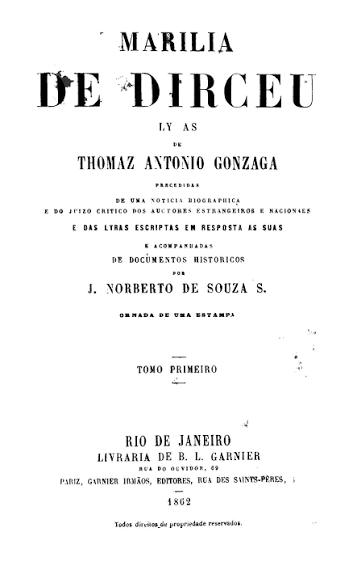
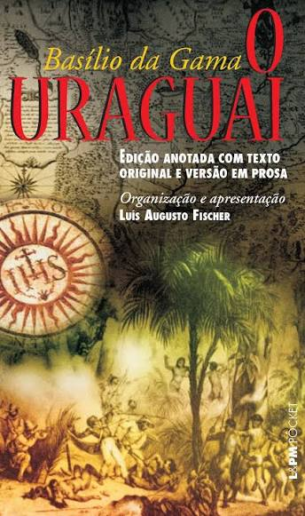
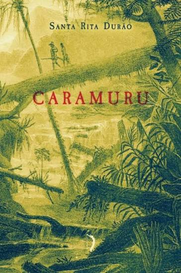
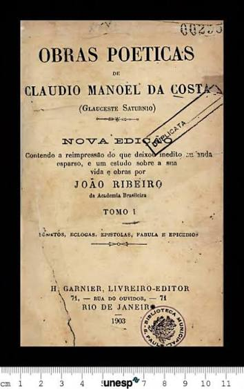

Marília de Dirceu
Tomás Antônio Gonzaga
O Arcadismo, também chamado de Neoclassicismo ou Setecentismo, surgiu no século XVIII, no auge do Iluminismo, como reação ao exagero e ao rebuscamento do Barroco. Seus autores defendiam a volta à simplicidade, ao equilíbrio e à razão, retomando os modelos greco-latinos e a herança do Classicismo do século XVI. O nome vem da Arcádia, região da Grécia antiga associada à vida pastoril, que se tornou símbolo de uma existência simples, em harmonia com a natureza. A Accademia dell'Arcadia, fundada em Roma em 1690, serviu de modelo para as academias literárias que se espalharam por vários países europeus.
Em Portugal, o movimento é situado entre 1756, ano de fundação da Arcádia Lusitana, e 1825, quando Almeida Garrett publica Camões, obra considerada marco inicial do Romantismo português. A Arcádia Lusitana (1756-1774) combatia o gosto barroco e defendia uma poesia clara, racional e fiel aos clássicos. Mais tarde, em 1790, surgiu a Nova Arcádia, da qual fez parte Bocage, poeta que também é visto como figura de transição para o Pré- Romantismo. Outros nomes importantes foram Correia Garção, Cruz e Silva e Filinto Elísio.
No Brasil, o marco inicial é 1768, com a publicação de Obras Poéticas, de Cláudio Manuel da Costa, e o fim costuma ser fixado em 1836, com Suspiros Poéticos e Saudades, de Gonçalves de Magalhães, que inaugura o Romantismo brasileiro. O centro da produção árcade foi Vila Rica, na região mineradora. Entre os principais autores estão Cláudio Manuel da Costa, Tomás Antônio Gonzaga, autor de Marília de Dirceu (1792), Basílio da Gama, autor de O Uraguai (1769), Santa Rita Durão, autor de Caramuru (1781), além de Alvarenga Peixoto e Silva Alvarenga.
As ideias centrais do movimento aparecem em expressões latinas herdadas de Horácio: locus amoenus (o lugar ameno e idealizado), aurea mediocritas (a vida simples e moderada), fugere urbem (fugir da cidade, símbolo de agitação e artificialidade), carpe diem (aproveitar o momento) e inutilia truncat (cortar o que é inútil, ou seja, o excesso de ornamentos). Os poetas adotavam o fingimento pastoril, assumindo nomes de pastores, como Glauceste Satúrnio, de Cláudio Manuel da Costa, e Dirceu, de Tomás Antônio Gonzaga, e cantavam pastoras como Marília. Cultivavam o soneto, a ode, a écloga, a epístola e a epopeia, em versos decassílabos e linguagem simples.
O século XVIII foi o século do Iluminismo, que valorizava a razão, a liberdade e o progresso e criticava os privilégios da nobreza e do clero. Pensadores como Voltaire, Rousseau, Montesquieu e os autores da Enciclopédia questionavam o poder absoluto dos reis. Em vários países, surgiu o chamado despotismo esclarecido, em que monarcas como Frederico II da Prússia, Catarina II da Rússia e José II da Áustria faziam reformas inspiradas nas novas ideias, sem abrir mão do poder absoluto. O período também foi marcado pela Independência dos Estados Unidos (1776) e pela Revolução Francesa (1789), que mudaram o cenário político do mundo ocidental.
Em Portugal, o despotismo esclarecido foi conduzido pelo Marquês de Pombal, ministro de D. José I (1750-1777). Depois do terremoto de Lisboa, em 1755, ele coordenou a reconstrução da cidade e iniciou uma série de reformas. Expulsou os jesuítas do país e das colônias em 1759, reformou o ensino, inclusive a Universidade de Coimbra (1772), reduziu o poder da Inquisição e, em 1773, acabou com a distinção legal entre cristãos-novos e cristãos-velhos. Com a morte de D. José I, em 1777, D. Maria I afastou Pombal do governo, em um período conhecido como Viradeira, no qual parte dessas medidas foi revista.
No Brasil, a Coroa reforçou o controle sobre a colônia, sobretudo na região das minas. A capital foi transferida de Salvador para o Rio de Janeiro em 1763, e a cobrança de impostos sobre o ouro, como o quinto (20%) e a derrama, gerava forte descontentamento. Inspirados pelo Iluminismo e pela independência dos Estados Unidos, intelectuais e autoridades de Minas Gerais organizaram a Inconfidência Mineira (1789). Entre os envolvidos estavam poetas árcades como Cláudio Manuel da Costa, Tomás Antônio Gonzaga e Alvarenga Peixoto. A repressão foi dura: Cláudio Manuel da Costa morreu preso em 1789, Gonzaga foi exilado em Moçambique, Alvarenga Peixoto em Angola, e Tiradentes foi executado em 1792. Em 1798, a Conjuração Baiana mostrou que essas ideias também circulavam em outras regiões da colônia.
A Revolução Industrial, iniciada na Inglaterra por volta de 1760, transformou a produção e fortaleceu a burguesia. As cidades cresceram, e surgiu um público leitor maior, que frequentava cafés, salões e academias e tinha acesso à imprensa e à Enciclopédia. A sociedade do Antigo Regime, baseada em privilégios de nascimento, passou a ser criticada por uma burguesia que reivindicava reconhecimento pelo trabalho e pelo mérito. A valorização da natureza e da vida simples no Arcadismo também pode ser lida como uma resposta ao luxo e à artificialidade da vida aristocrática e da corte.
Em Portugal, a economia estava em decadência e dependia do ouro brasileiro e da Inglaterra, com quem o país mantinha o Tratado de Methuen (1703), que favorecia os produtos ingleses. Pombal tentou modernizar a economia, estimulando manufaturas e criando companhias de comércio, como a Companhia Geral do Grão-Pará e Maranhão (1755), a Companhia Geral da Agricultura das Vinhas do Alto Douro (1756) e a Companhia Geral de Pernambuco e Paraíba (1759). A dependência externa, porém, continuou. Em 1761, um alvará proibiu a entrada de pessoas escravizadas em Portugal continental, mas a escravidão foi mantida nas colônias.
No Brasil, o século XVIII foi o do ciclo do ouro e dos diamantes, que deslocou o eixo econômico do Nordeste açucareiro para o Centro-Sul. Cidades como Vila Rica, Mariana, Sabará e São João del-Rei cresceram, formando uma sociedade mais urbana, composta por mineradores, comerciantes, funcionários da Coroa, religiosos e artesãos, sustentada pelo trabalho de africanos escravizados. Havia vida cultural intensa, com uma elite formada em Coimbra e bibliotecas que reuniam obras iluministas. A partir da década de 1760, a produção de ouro começou a cair, mas a Coroa manteve a cobrança de impostos, o que ampliou as tensões que levaram à Inconfidência Mineira.

Tomás Antônio Gonzaga

Basílio da Gama

Santa Rita Durão

Cláudio Manuel da Costa
Versos amorosos em que o poeta assume o papel de pastor e canta a pastora amada em meio à natureza idealizada. Exemplo máximo: Marília de Dirceu.
Poemas narrativos sobre episódios da formação do Brasil, muitas vezes com personagens indígenas. Exemplos: O Uraguai e Caramuru.
Versos de crítica política e social, usados para denunciar abusos de poder. Exemplo: as Cartas Chilenas, atribuídas a Tomás Antônio Gonzaga.
Formas fixas herdadas da tradição clássica, de linguagem simples e equilibrada, cultivadas por Cláudio Manuel da Costa e Alvarenga Peixoto.

1972 • Dir. Joaquim Pedro de Andrade

1999 • Dir. Oswaldo Caldas

1976 • Dir. Cacá Diegues

1984 • Dir. Miloš Forman

2012 • Ubisoft

2014 • Ubisoft

2013 • Paradox Development Studio

2005 • Ensemble Studios
Tomás Antônio Gonzaga escreveu parte de "Marília de Dirceu" na prisão, depois de ser acusado de participar da Inconfidência Mineira. A Marília de seus versos teria sido inspirada em Maria Dorotéia Joaquina de Seixas, com quem ele pretendia se casar.